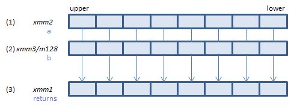
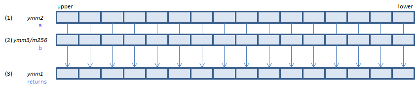

VSCALEFPH - SCALE Floating-point Packed Half
VSCALEFPH xmm1{k1}{z}, xmm2, xmm3/m128/m16bcst (V5+FP16+VL
__m128h _mm_scalef_ph(__m128h a, __m128h b)
__m128h _mm_mask_scalef_ph(__m128h s, __mmask8 k, __m128h a, __m128h b)
__m128h _mm_maskz_scalef_ph(__mmask8 k, __m128h a, __m128h b)

For each FP16, calculate (1) * 2n, where n is an integer value of (2) truncated toward negative infinity, and store the result in (3).
VSCALEFPH ymm1{k1}{z}, ymm2, ymm3/m256/m16bcst (V5+FP16+VL
__m256h _mm256_scalef_ph(__m256h a, __m256h b)
__m256h _mm256_mask_scalef_ph(__m256h s, __mmask16 k, __m256h a, __m256h b)
__m256h _mm256_maskz_scalef_ph(__mmask16 k, __m256h a, __m256h b)

For each FP16, calculate (1) * 2n, where n is an integer value of (2) truncated toward negative infinity, and store the result in (3).
VSCALEFPH zmm1{k1}{z}, zmm2, zmm3/m512/m16bcst{er} (V5+FP16
__m512h _mm512_scalef_ph(__m512h a, __m512h b)
__m512h _mm512_mask_scalef_ph(__m512h s, __mmask32 k, __m512h a, __m512h b)
__m512h _mm512_maskz_scalef_ph(__mmask32 k, __m512h a, __m512h b)
__m512h _mm512_scalef_round_ph(__m512h a, __m512h b, int r)
__m512h _mm512_mask_scalef_round_ph(__m512h s, __mmask32 k, __m512h a, __m512h b, int r)
__m512h _mm512_maskz_scalef_round_ph(__mmask32 k, __m512h a, __m512h b, int r)

For each FP16, calculate (1) * 2n, where n is an integer value of (2) truncated toward negative infinity, and store the result in (3).
x86/x64 SIMD Instruction List
Feedback